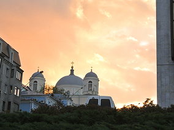
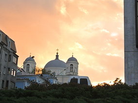
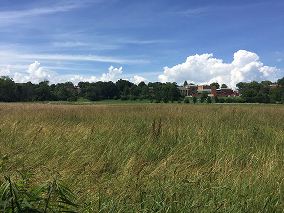
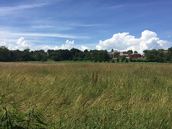
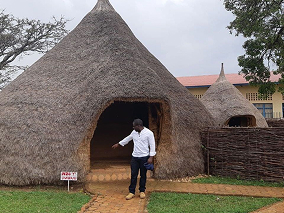
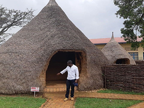

Conoce un poco mejor los lugares de los que proceden tus colegas en línea
Todo ser humano es un artista, un ser de la libertad, llamado a participar en la transformación y reforma de las condiciones, el pensamiento y las estructuras que conforman e influyen en nuestras vidas. ― Joseph Beuys
La ciudad de TripleTen ha reunido a profesionales de diferentes rincones del mundo. Hoy, la Galería de Arte TripleTen se enorgullece de presentar historias y fotografías de algunas de las personas que dedican su tiempo y esfuerzo a hacer que los futuros profesionales de la tecnología de esta ciudad se sientan como en casa. Cada uno de nosotros tiene una historia única sobre el lugar del que procede. No dudes en añadir a nuestra colección tu propia historia y una obra de arte visual dedicada a tu ciudad natal. No importa de dónde seas, nos alegra que seas nuestro vecino.
Galeria

 

 

 


Cricieth, Gales
Steffan Warren, editor jefe
Kseniya Glagoleva, gerente de proyectos
Las ruinas medievales del castillo de Cricieth dominan la ciudad desde una roca que extiende sobre el mar. Se cree que fue construido por Llewelyn el Grande en el S. XIII. 800 años después, la autodenominada Perla de Gales en las costas de Snowdonia, se ha convertido en un popular destino turístico durante los meses de verano. A pocos pasos de camino al castillo, puedes disfrutar de los mejores helados del mundo en Cadwalader's, cuyo ingrediente secreto se rumorea que son algas marinas de la localidad. Otra cosa por la que es famosa Cricieth es por haber ganado el premio *Gales en flor* durante cinco años seguidos por sus espectaculares muestras florales alrededor de la ciudad. También vio nacer a David Lloyd George, el único galés que ha sido Primer Ministro del Reino Unido.
Berea, EE. UU.
Travis Turner, autor y editor
Berea es una pequeña ciudad ubicada en la parte central de Kentucky. La ciudad está rodeada por hermosos bosques y campos. Es conocida como la capital de la artesanía del estado, y sus visitantes hallarán infinitas posibilidades para ir de compras: tiendas de joyas, velas y artículos de madera artesanales; galerías, talleres de vidrio y más. La ciudad celebra un festival anual que rinde tributo al "spoonbread", un platillo local hecho de pan de maíz y que se sirve con una cuchara de madera. Aunque, probablemente es mejor conocida por su universidad. El Berea College fue fundado en 1855 y fue la primera universidad sureña integrada racialmente, así como la primera en ser coeducacional. Algo que en cierta manera la hace única, es que no cobra colegiatura: cada estudiante recibe una beca del 100%.
Muramvya, Burundi
Grevisse Kenguruka, editor técnico
Muramvya es una de las 18 provincias de Burundi. Durante la época del reino, Muramvya fue su capital; y en 2017, gracias a su paisaje cultural y natural, se añadió a la Lista provisional de patrimonio mundial de la UNESCO. Se encuentra ubicada en el centro de Burundi, entre las capitales política y económica del país. Su clima es más bien frío durante la noche, pero durante el día, podrías pensar que estás en el paraíso. A sus 2,665 metros (8,743 ft) sobre el nivel del mar, el Monte Teza es uno de los lugares más fríos de la provincia. Pero es justo esa brisa fresca la que da pie a una de las más grandes plantaciones de té y café del país, y que representa la mayoría de las exportaciones de Burundi. El Parque nacional de Kibira, una de las mayores reservas de vida silvestre para los simios, ocupa parte de cuatro provincias, incluyendo Muramvya. Este parque nacional se encuentra en las cúspides de las hermosas montañas de la Divisoria Congo-Nilo, cuyas alturas oscilan entre 1,550 y 2,660 metros. Está lleno de hermosa vegetación, y es una fuente para los diversos ríos y arroyos que proporcionan agua alrededor del país.
Tlatelolco, México
Cetura Ramos, diseñadora gráfica
El nombre en náhuatl, se interpreta como “punto arenoso” o “montículo redondo de arena”. El pueblo tlatelolca, como se les conoce, a veces se aliaba con Tenochtitlán durante los conflictos. Permanecieron independientes hasta 1473, cuando Tenochtitlán volvió a someter a sus vecinos insurgentes del norte. Tlatelolco fue destruido casi por completo después de la caída de Tenochtitlán. Su templo, una pirámide hoy visible en la Plaza de las Tres Culturas, seguiría siendo un punto de referencia del área durante muchos años adelante. No fue hasta 1940 que los arqueólogos se interesaron realmente por la zona. Cuando se iniciaron las obras del gigantesco Conjunto Habitacional Nonoalco-Tlatelolco en la década de los sesenta, se realizó un estudio sistemático del área. Actualmente, el conjunto habitacional incluye 90 edificios de departamentos. Casi todos los residentes pertenecen a la clase media o media-baja. Aún así, Tlatelolco sigue siendo un fuerte símbolo de solidaridad. Es un viaje fascinante a los muchos pasados (modernista, antiguo y colonial) que le han dado a la ciudad su rostro actual y su perspectiva del mundo.